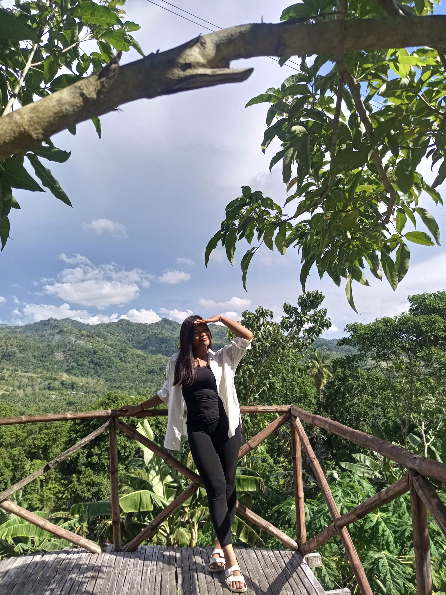
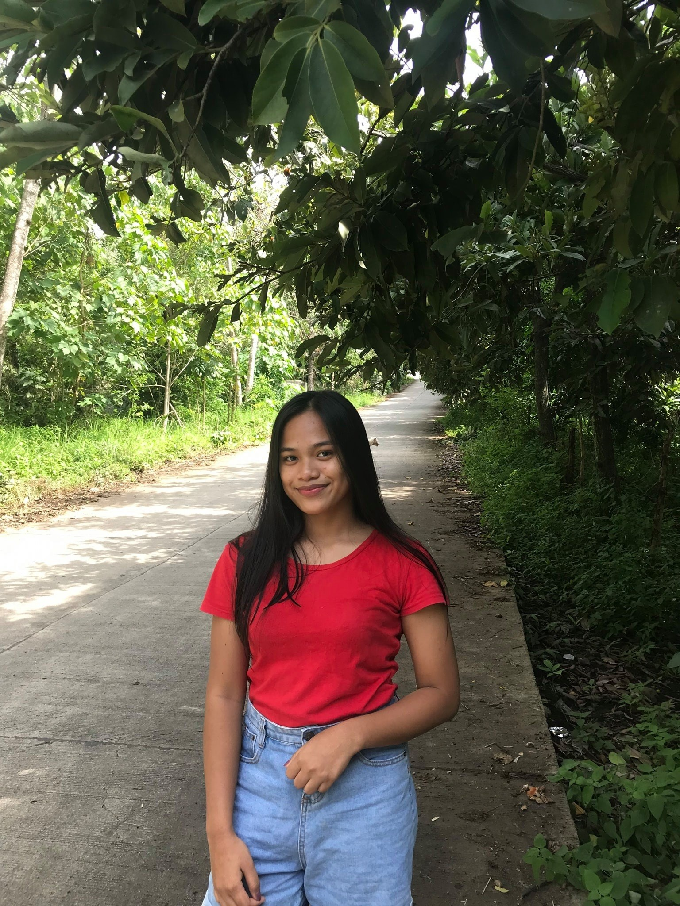

Who Am I?

I am a girl in young adult, 2nd year college student at University of Science and Technology of Southern Philippines and I am taking BS Information Technology course. From childhood, I always loved to write about how's my day and draw houses with boredom. I like to know people and make friends but I am not social person and I go out with my friends and family sometimes. Also, I like to visit new places. Nature attracts me. Therefore, whenever I get the vacation I always insist on my friends and family for a getaway in nature's lap. Travelling gives me immense pleasure. I always capture beautiful moments and places in my camera. Whenever I am sad, I revisit my photo album to look at the beautiful places and moments. The thought of those happy moments and beautiful places makes me happy.
SearchI like views like this and this was taken at Initao and that was our YSL Team Building event.
This was taken on my 20th birthday picture and I really like keeping pictures that I feel I was beautiful

I really like this picture because it was year 2021, like blooming kay ko karon mura nakog lola and like hello can we go back to the day our love was still in kilig phase.
